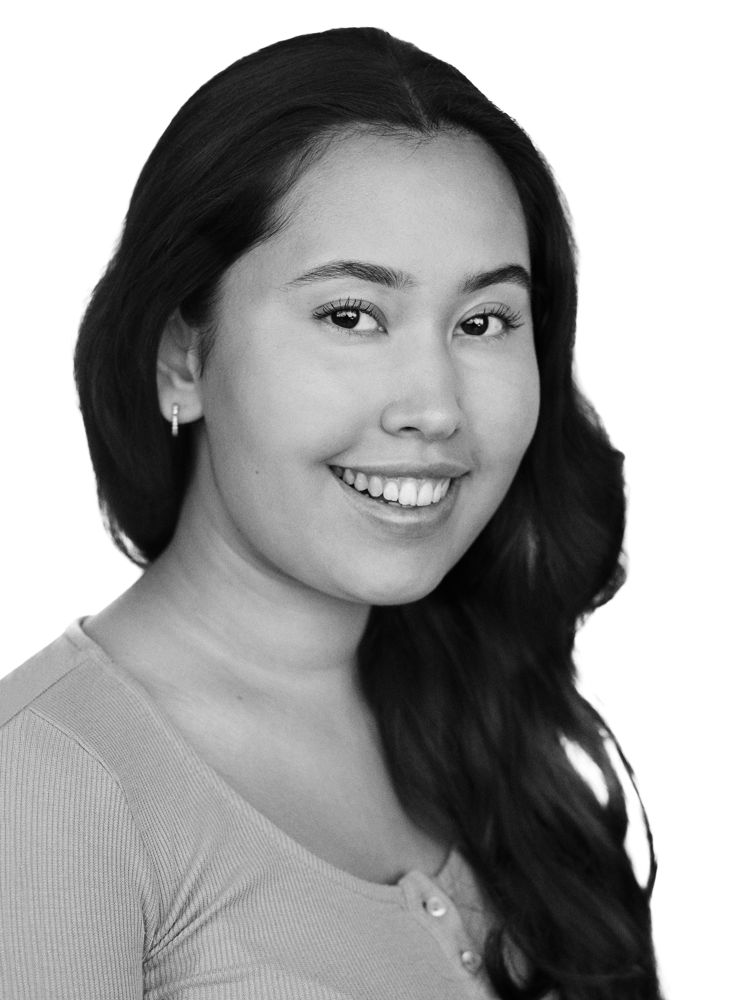

Søg mig som en multimediedesigner. Jeg har erfaring indenfor en række medier, lige fra akryl, akvarel maling, blyant og kul til digitale medier. I baggagen har jeg en del kurser jeg kan trække på, derudover er jeg pt igang med en multimediedesigner uddannelse. Personligt har kunst altid tiltalt mig, da jeg siden en meget ung alder har været kreativt anlagt. Derudover har jeg en forkærlighed for alle kunsttyper, hvad bla. indgår musik, malerier og skulpturer. Jeg lader mig ikke binde af en bestemt kunst genre, men lader mig gerne inspirere fra alle steder.
Karin Olesen Galleri.
Gl. Kongevej 179, 1850 Frederiksberg.
Arbejdsforløb, hvilket inkluderede: Viden fra Karin Olesen, praktisering af salg og service, viden om litografi, print, materialer, collage og priser.
Kunstner og galleriejer: Karin Olesen.